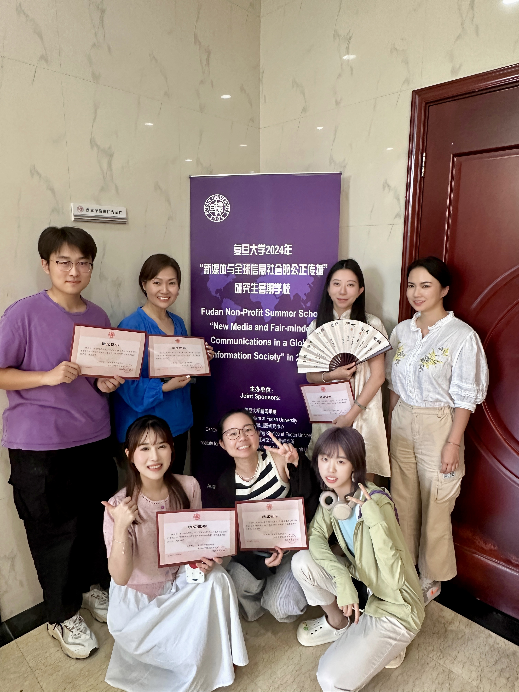

Academic activities & industry
Experience 其他经历
Other academic experience 其他学术经历
- Aug 2024
Fudan University Graduate Summer School on New Media and Just Communication in the Global Information Society [复旦大学第十三届“新媒体与全球信息社会的公正传播”研究生暑期学校]
Delivered the closing remarks as the sole master’s student representative.
- 2022
Undergraduate research project lead [大学生创新创业训练项目负责人]
A study of the communication effects of neo-frugality advertising among university students [新节俭主义广告在大学生群体中的传播效果研究]
University-level project; completed.
- 5–14 Jul 2026
China–Russia Youth Leadership Summer Camp [中俄青年领袖夏令营]
Student assistant [学生助理] · School of Journalism and Communication, Renmin University of China · Beijing
Supported the organization and coordination of the full programme, including academic sessions, media visits, cultural exchange, and collaborative video production.



Industry experience 实习经历
- 2024

ShowWorld [看看世界北京文化有限公司]
E-commerce livestreaming coordination [电商直播统筹]
- 2023

ByteDance · TikTok cross-border business [字节跳动TikTok跨境商业部门]
Advertising operations [广告运营]
- 2022

ByteDance · Feishu PR & Marketing [字节跳动飞书公关市场部]
Social media operations [新媒体运营]
- 2022

Xinhua News Agency · New Media Department [新华社新媒体部]
Editor, Ask a Reporter [问记者栏目编辑]
- 2021

China Unicom · Wuhan [中国联通武汉分公司]
New media design and operations [新媒体设计运营]
- 2021

Tencent · Television drama [腾讯电视剧]
Content operations [内容运营]